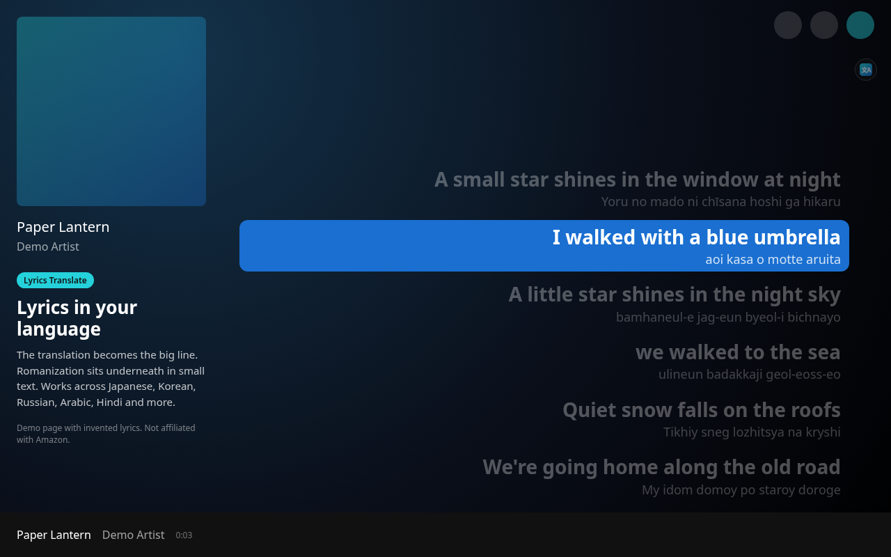
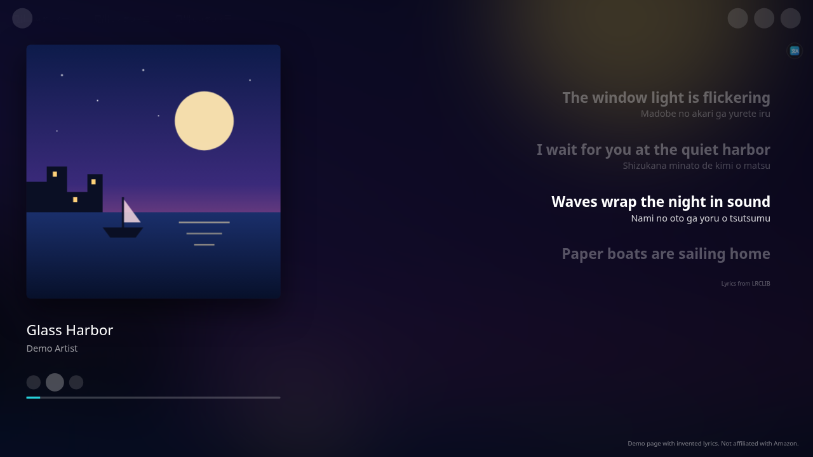
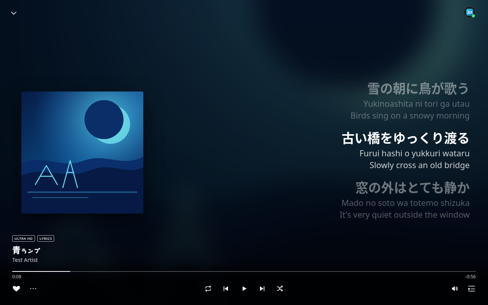
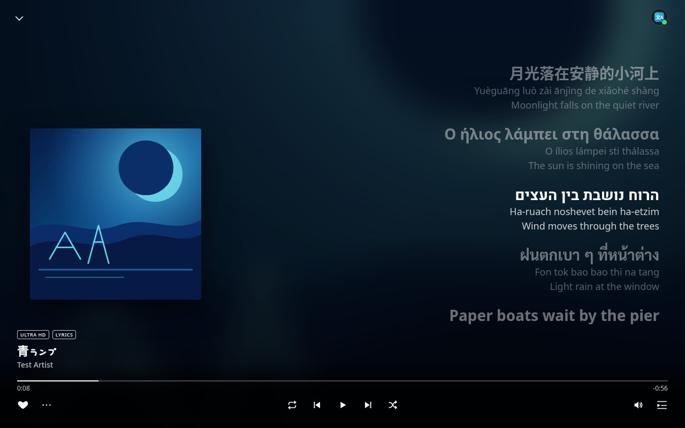
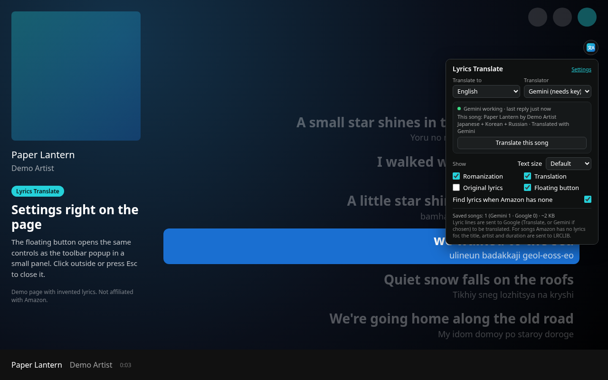
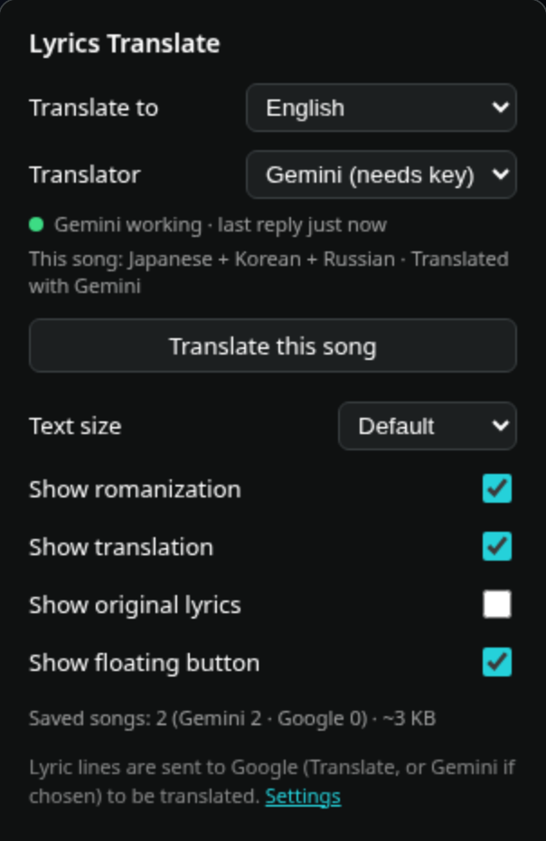

Lyrics Translate & Romanize for Amazon Music is a free Microsoft Edge extension. It translates the lyrics in the Amazon Music web player (music.amazon.com) as they scroll, and adds an easy-to-read romanization under lines written in Japanese, Korean, Chinese, Cyrillic, Arabic, Hindi, Thai, Greek, Hebrew and other non-Latin scripts. And when Amazon has no lyrics for a song, it finds synced lyrics on LRCLIB and shows them in the full view, right where Amazon's own lyrics would be.
Microsoft Add-ons store updates can take up to a week because Microsoft reviews each one. The GitHub version is always the newest. See what's changed.
Free and open source (MIT). No account, no analytics. Not affiliated with Amazon.

All screenshots use a local demo page with invented lyric lines.
Everything happens inside the lyrics view you already use. Open a song's lyrics in the Amazon Music web player and the extension does the rest.
No lyrics on Amazon? The extension looks the song up on LRCLIB, a free, open lyrics database, and shows the lyrics in Amazon's full view, in the same spot and style as Amazon's own, with the current line highlighted as the song plays. Translated and romanized too.
Use the free Google Translate web service with no key or account, or paste your own free Gemini API key for natural translations that use the whole song as context. The key is saved only in your browser.
If Gemini hits a quota, rejects the key, times out (20 s) or sends an unexpected reply, that song is translated with Google Translate instead, without interrupting you. Gemini is retried after a short pause.
Non-Latin lines get a romanization in small text: romaji for Japanese, pinyin for Chinese, Revised Romanization for Korean, plus Cyrillic, Arabic, Hebrew, Devanagari, Thai, Greek and more. Latin-script lines never get one.
By default the translation replaces the original as the big, bold line, with the romanization underneath. Turn on Original lyrics in the popup to keep the original big and show the extras in small text.
A small round button in the top-right corner of the player opens the popup as a panel right on the page. Click outside it or press Esc to close it, or hide the button in the popup. With Gemini selected, a small dot on it shows the Gemini status, like the popup.
Results are saved per song, translator and language: up to 2000 songs (400 lines each). Replays are instant and make no requests. When the cache is full, the least recently played songs are removed first.
Songs already in your language are left alone and never go to Gemini, even if the lyrics contain symbols, emoji or a stray look-alike letter from another alphabet. A mostly English song with a few lines in another language only gets those few lines translated.
If a mixed-language song was left partly untranslated, one click translates the whole song again with the selected translator and remembers not to skip it next time.
Scale all the lyric text the extension shows from 85% to 145% (Small, Default, Large, Extra large) without zooming the rest of the player, so auto-scrolling keeps working.

Some songs have no lyrics on Amazon Music. When that happens, the extension finds synced lyrics on LRCLIB and shows them in the full view, in the same place and style as Amazon's own lyrics.

Can't read the script? Follow the romanization line as the song plays.

With Original lyrics on, the original stays the big line. Songs that mix scripts are handled line by line: each line gets its own romanization and translation, and lines already in your language are left alone.

The floating button opens the full popup as an in-page panel, handy in full-screen or when the toolbar is hidden. It's the same popup, with the same live status lines, and while Gemini is the translator the button's corner dot shows its status at a glance (green: working).
Click the toolbar icon (or the floating button). Changes apply immediately to the open lyrics.

Recent versions, newest first. Full history and downloads in the releases.
Fixed lyrics caching.
Lyrics keep being collected if the window is covered or minimized.
When Gemini is selected and there is no API key, the popup shows a Set key link that opens settings. The settings page links to Google's guide for creating an API key. Lyrics stay put and clear when going back to an earlier song. There's no highlight between lines. Lyrics stay when the popup is open. Fixed lyric selection from LRCLIB.
Fixed lyrics jumping back and forth, caused by Amazon scrolling the lyrics on its own because of the text size difference. Unpacked copies show a ! on the floating button when an update is available.
LRCLIB lyrics that are only a romanization now sit under the translation, and a copy in the original script is preferred when one exists. With Gemini, Original lyrics shows a marked guess (≈) of that script. Tidier popup checkboxes, and the floating button shows the Gemini status dot.
Fixed: after jumping ahead in a song, the highlighted line could scroll off screen (worse with big text). It now comes straight back to the middle of the lyrics. Popup fits without scroll bars again.
First public release with LRCLIB lyrics and the smarter language check (1.3.0–1.3.3 were test builds, released together here). Copies installed with Load unpacked now tell you when a new version is out (a NEW badge and a download link in the popup) and get a Check for updates button. Store copies update automatically, as before.
Test build, released in 1.3.4. Smarter language check: songs already in your language never go to Gemini, even with look-alike characters, and mostly English songs only get their few foreign lines translated.
Test build, released in 1.3.4. Lyrics from LRCLIB now appear in Amazon's full view, in the same spot and style as Amazon's own lyrics, with the current line highlighted.
Test build, released in 1.3.4. More reliable detection of songs Amazon has no lyrics for, using the player bar's "Lyrics available" badge.
Test build, released in 1.3.4. New: synced lyrics from LRCLIB for songs Amazon has no lyrics for, translated and romanized, following playback, seeks and pauses. Popup toggle Find lyrics when Amazon has none (on by default).
Free-tier rate limits and daily quotas apply, and on the free tier Google may use the content sent to improve its products. The key is stored only in this browser (not synced) and sent only to Google's Gemini API, in a request header.
The easiest way: install it from the official store with one click, and Edge keeps it updated automatically. Store copies never contact GitHub.
extension folder).edge://extensions (in Chrome: chrome://extensions).manifest.json.Unpacked copies tell you when a new version is out (a small NEW badge on the toolbar icon, a ! on the floating button, and a download link in the popup) and have a Check for updates link at the bottom of the popup. To update, unzip the new ZIP over your folder and press Reload on the extension card.
Microsoft Add-ons store updates can take up to a week because Microsoft reviews each one. The GitHub version is always the newest. See what's changed.
Only the English Amazon Music sites: music.amazon.com, .ca, .co.uk, .com.au, .in, and .ae. Other regional sites aren't included, because they can't be tested from here. If you can help test one, open an issue on GitHub. The Google Translate web endpoint is unofficial and rate-limited; if it refuses requests, lines stay as they are and the extension retries about a minute later.
Not affiliated with Amazon. This is an independent, unofficial extension. It is not made, endorsed or supported by Amazon. Amazon Music is a trademark of Amazon.com, Inc. or its affiliates. Google Translate and Gemini are trademarks of Google LLC. Lyrics for songs Amazon has none for come from LRCLIB, an independent community project.
The developer collects nothing. There are no analytics, no trackers, no accounts and no servers of our own.
Only the lyric lines on screen are sent to Google Translate, and to Google Gemini if you added your own key, only to translate or romanize them (or, for lyrics that are already romanized, for Gemini to guess the original script). No cookies, song history or other data.
Only for songs Amazon has no lyrics for, the song's title, artist and duration are sent to lrclib.net to find lyrics. No personal data, no account. Switch it off with Find lyrics when Amazon has none.
Copies installed with Load unpacked ask GitHub's public API for the latest version number about once a day and when you press Check for updates. Nothing personal is sent. Store copies never do.
Your Gemini key, the translation cache and the LRCLIB lyrics cache stay in local extension storage; your settings are in sync storage. Removing the extension clears them.
These work together on Amazon Music with seamless compatibility: the translator button, the find button, and the Song History button stack, and opening lyrics does not fight search.
On an Amazon Music playlist page, a floating button under the lyrics translator finds the next song. Find next matches a case-insensitive substring of the title or artist, including songs that are not loaded yet, scrolls that row into view, and does not play it. It wraps once. The button hides when lyrics or the queue is open. The translation panel stacks above the search button, and opening translation closes the search box.
Make playlists from the songs in your history.